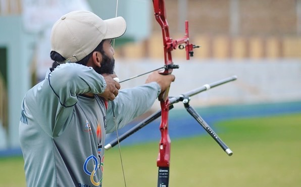

Israrulhaq
Professional Archer and new web Developer

Summary
I am an International archery player
Education
- Fsc Pre-engineering
- Health and Physical Education Diploma
- Learning Web Development from Udemy
Work Experience
skills
- level 1 Archery couch
- Level 1 Archery Workshop
Achievments
- Acquired Gold Medal in Pak-Iran Archery Championship 2018.
- Attained Silver Medal in Individual and Bronze Medal in Team event category at the 4rth Provincial Games 2018
- Obtained 2 Gold medals in Individual and Team event category at 7ty National Archery Championship 2019
- Procured 3 Gold medals in in Individual, Team event and Mix teeam category at the 1st Inter Provincial Archer Championship 2019
- Attained Bronze Medal in Team event at the 33rd National Games 2019
- Acquired Silver medal in Individual head to head matches at the 9th National Archer Championship 2022
- Attained Bronze medal in team event at the 34th National Games 2023
- Obtrained a record of 659 score in the National camp 2023
- I scored my career personal best at the Asian Games China, with 634, thus surpassing the Pakistan National record.
World Archery Ranking
Recurve Mens
- Marcus D'Almeida
- Kim Woo-jinF
- LEE WOO SEOK